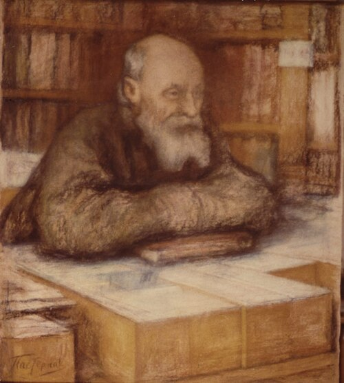
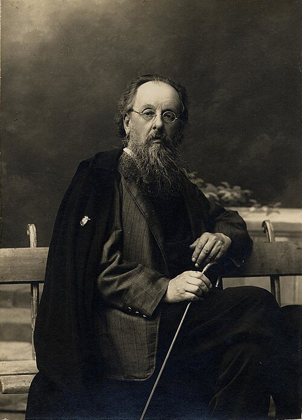

BG
'">Key figures
The cast
Founders, theorists, builders, and financiers of the project.
Theorist
Ben Goertzel
b. 1966Popularized the term “AGI”; author of “A Cosmist Manifesto” (2010). Promises science will resurrect the dead by copying them into the future. Founder of OpenCog and SingularityNET.
Wikipedia →AL
'">Prophet
Anthony Levandowski
b. 1980Self-driving engineer who founded Way of the Future, a church for an AI “godhead.” “In technology, all that matters is tomorrow.”
Wikipedia →
Builder
Elon Musk
b. 1971Founded SpaceX to make humanity “multiplanetary.” Turned cosmist expansion into a corporate mission and a Mars-colonization timeline.
Wikipedia →
NFFounder
Nikolai Fedorov
1829–1903Russian Cosmism's originator. Taught that humanity's moral task was the physical resurrection of all the dead and the colonization of space to house them.
Wikipedia →
KTPioneer
Konstantin Tsiolkovsky
1857–1935Fedorov's student and father of modern rocketry. Carried cosmism's dream of cosmic expansion into the science that became the Soviet space program.
Wikipedia →